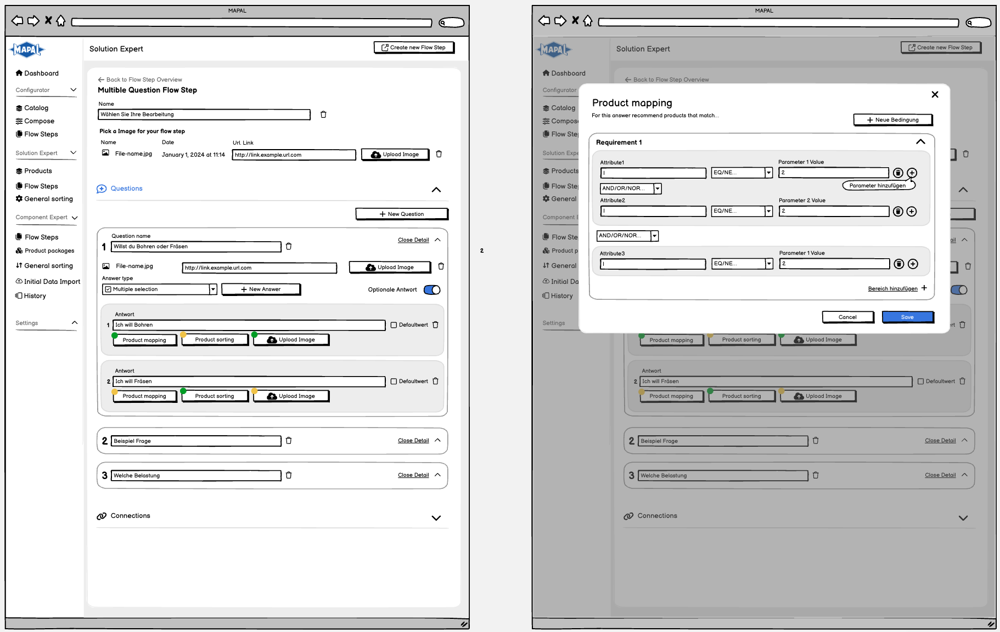
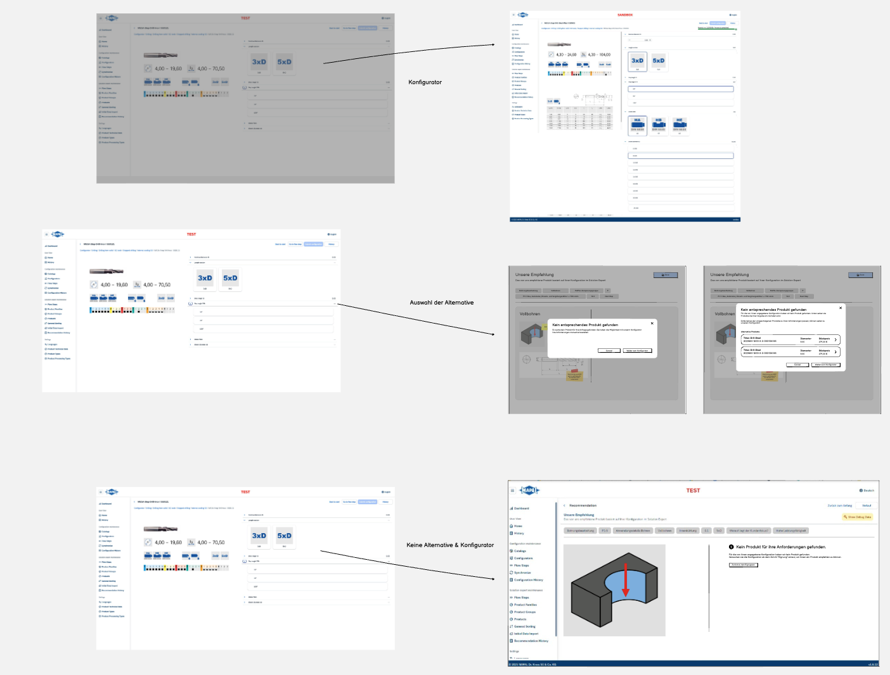
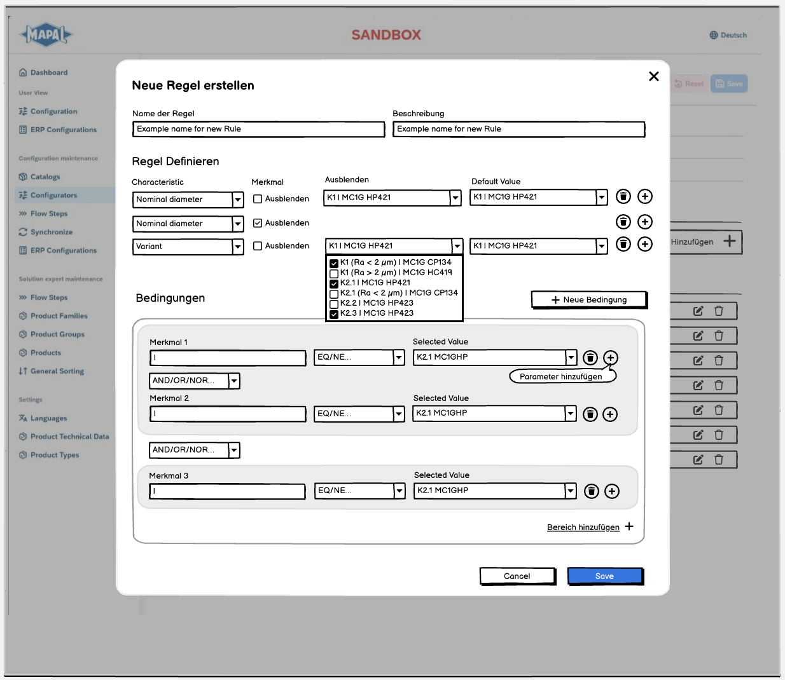

Replacing a legacy experttool with a purpose-builtconfiguration platform.
MAPAL, a global precision tooling manufacturer, managed their cutting-tool configurator logic through a third-party admin backend Zoovu. I led the UX to replace it with a custom-built SAP BTP application, purpose-designed for expert users, not borrowed from a vendor.
MAPAL managed the logic of their product configurator, used by customers globally, through an admin backend called Zoovu. As the catalog grew to 100+ configurators and complex dependency trees, the tool became a bottleneck. Expert users had the power they needed, but no structure to wield it.
Core complexity
Multi-level flow-step hierarchies with parent / child dependencies
Product mapping rules using boolean attribute conditions
ERP synchronization status spread across multiple views
No clear information hierarchy. Experts got lost navigating
Business goal
Migrate off third-party Zoovu dependency
Reduce time-to-configure for new product lines
Make system state (ERP, KB, live) transparent at a glance
Enable future extensibility without tool-vendor lock-in
/02 · Discovery & Research
Understanding complexity before designing solutions.
Discovery combined a hands-on audit of the existing Suvo tool with structured workshops to capture mental models, pain points and expert workflows across three distinct user groups.
Method 1
Heuristic audit
Systematic walkthrough of Suvo, cataloguing navigation issues, inconsistent terminology, missing status transparency and cognitive overload in product mapping.
Method 2
Expert workshops
Co-design sessions with Solution Experts, Component Experts and Configuration Managers. Real workflows and edge cases captured through job shadowing and scenario walkthroughs.
Method 3
Data & flow mapping
Mapped the full flow-step hierarchy, ERP configuration states and product-attribute dependency logic to expose structural complexity for the new design system.
Key findings
Too many unused featuresUsers felt lost and insecureFlow-step connections not visualizedProduct mapping rules were confusingSorting logic buried in nested menusRecommendations view missing key columns
/03 · Information Architecture & Flows
Structuring complexity into a navigable system.
The new IA separates Configuration Maintenance (catalog level), Solution Expert (flow logic) and Component Expert (parts & attributes), matching how expert users actually think, not how the system was technically structured.
Five core surfaces carry the redesign, from catalog-level transparency down to the boolean logic of a single product mapping. The screen on the left changes as you scroll.



/01Catalog & ERP status01 / 05
/01 · System state at a glance
Make ERP, KB and live status visible. Inline.
The catalog and configurator lists now surface ERP sync state, knowledge-base completeness and "active" status directly in the table. The single biggest source of confusion in the legacy tool.
Experts no longer click into each item to learn whether it's safe to publish. The system tells them, at the list level.
ERP syncKB statusInline transparency
/02 · Flow-step architecture
A navigable hierarchy for parent / child dependencies.
Multi-level flow steps are expressed as an accordion tree. Each parent shows its child count and mapping status; expanding reveals the structure without losing the user's place.
Complexity stays. It's simply organised, so experts can reason about a configurator's logic top-down.
AccordionParent / childHierarchy
/03 · Connections, visualized
Dependencies you can see, not hunt for.
Setting a flow step's predecessors and successors is now a visual act. Connections render around the current step instead of hiding in nested menus.
This was a top finding in discovery. The legacy tool never showed how flow steps related to one another.
Dependency graphPredecessorsSuccessors
/04 · Product mapping
Boolean logic, made readable.
Product mapping rules are expressed through labeled condition blocks (attribute → operator → value) joined with explicit AND / OR connectors and a live count of matched products.
Rules that were once opaque are now auditable by any expert, not just whoever wrote them.
ConditionsAND / ORLive match count
/05 · Dev handoff
Specs ready for SAP BTP development.
Every screen shipped with full interaction specs: accordion states, empty states, warning badges, pagination and sorting-rule ordering, annotated and traceable.
Close collaboration and co-development with the engineering team throughout the entire process.
Interaction specsAll statesSAP BTP
/05 · Outcomes & Impact
A system experts could trust and navigate.
The new application replaced a third-party dependency with a purpose-built internal tool. Expert users validated the structure across two workshop rounds before dev handoff.
Clearer navigation model
Three distinct expert roles now have dedicated navigation contexts. No more shared, undifferentiated menus. Role-appropriate entry points reduce cognitive load.
ERP status transparency
Catalog and configurator lists now surface ERP sync state, KB completeness and "active" status inline, reducing the need to click into each item individually.
Structured product mapping
Boolean attribute logic is now expressed through labeled condition blocks (attribute → operator → value), making complex rules readable and auditable by any expert.
Clean dev handoff
Wireframes delivered with full interaction specs: accordion states, empty states, warning badges, pagination and sorting-rule ordering. Ready for SAP BTP development.
/06 · Reflection & Learnings
What this project taught me about designing for experts.
Complex admin tooling demands a different design mindset than consumer UX. The goal isn't simplification. It's the right abstraction level for expert users who need power and clarity simultaneously.
Learning 1
Don't simplify, structure
Expert users need all the complexity. They just need it organised. Accordion panels and role-based navigation gave experts full access without overwhelming newcomers.
Learning 2
Data visibility is UX
Adding ERP / KB status columns to list views was a pure UX win. No extra interaction, just making existing system state readable. Often the best improvements are subtractive.
Learning 3
Workshops as design tools
The most important design decisions happened in workshops, not in Figma. Co-creation with domain experts surfaced requirements no brief could have captured.